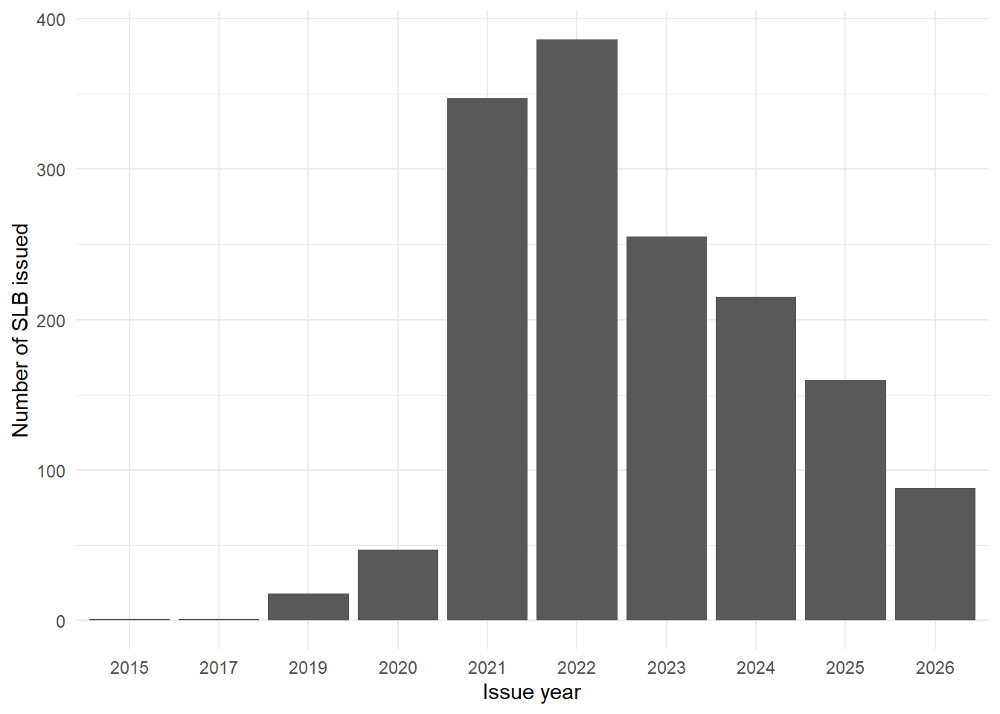
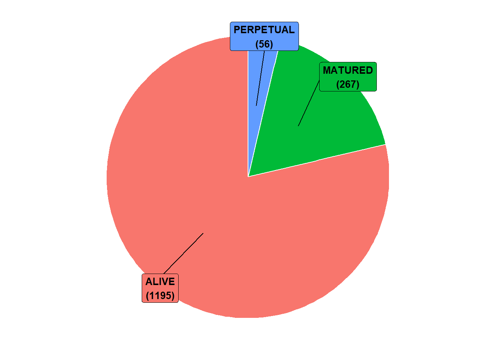
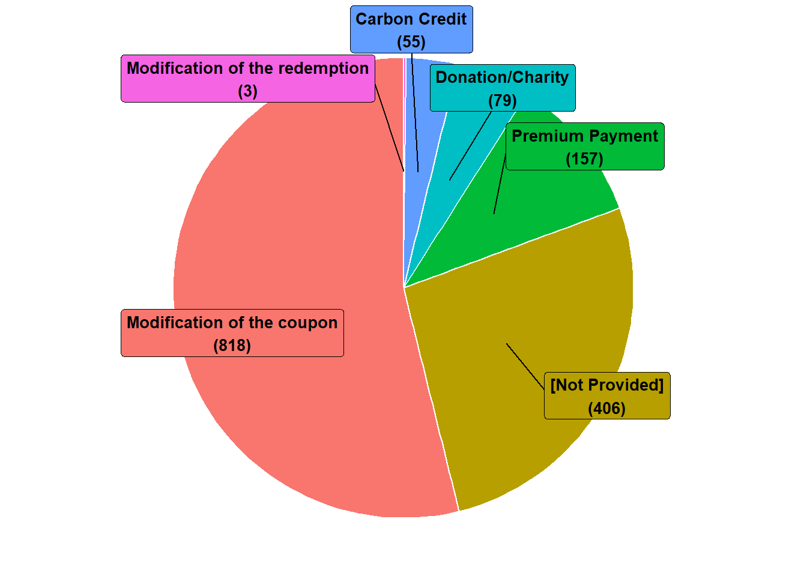
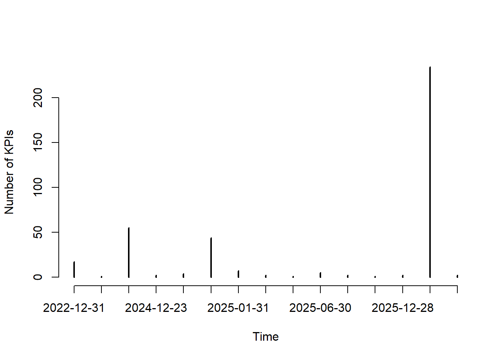

| cusip | cusip_id | issuer | ticker | issue_date | kpis | moody_init_rating | coupon | maturity | series | bbg_composite | mty_type | currency | desc_notes |
|---|---|---|---|---|---|---|---|---|---|---|---|---|---|
| EK8790637 | EK8790637 Corp | Ihsan Sukuk Bhd | KNBZMK | 2015-06-18 | Other | NA | 4.3 | 2022-06-17 | IMTN | NA | AT MATURITY | MYR | STEP-DOWN: PROPOSED 100BPS ON PRINCIPLE REPAYMENT. SPTS: INDIVIDUAL SCHOOL’S PERFORMANCE IN TERMS OF QUALITY OF EDUCATION PROVIDED. |
| AO3505242 | AO3505242 Corp | Ihsan Sukuk Bhd | KNBZMK | 2017-08-08 | Other | NA | 4.5999999999999996 | 2024-08-08 | IMTN | NA | AT MATURITY | MYR | INCLUDES RETAIL TRANCHE=MYR5MM.STEP-DOWN:40BPS.SPTS:(1)NO. OF SCHLS SCALED UP,(2)TEACHERS’ PROCIENCY,(3)ENABLING LEANRING ENV IN SCHLS,(4)STUDENT PROFICIENCY. |
| ZS6974621 | ZS6974621 Corp | Duerr AG | DUEGR | 2019-07-04 | ESG Score | NA | 0 | 2029-07-04 | 10Y | NA | AT MATURITY | EUR | PRICING STEPS UP BY 2BPS IF SUSTAINABILITY SCORE <=40. PRICING STEPS DOWN BY 2BPS IF >=62 |
| ZS6974936 | ZS6974936 Corp | Duerr AG | DUEGR | 2019-07-04 | ESG Score | NA | 0 | 2027-07-04 | 8YFX | NA | AT MATURITY | EUR | PRICING STEPS UP BY 2BPS IF SUSTAINABILITY SCORE <=40. PRICING STEPS DOWN BY 2BPS IF >=62 |
| ZS6974944 | ZS6974944 Corp | Duerr AG | DUEGR | 2019-07-04 | ESG Score | NA | 0 | 2025-07-04 | 6YFX | NA | AT MATURITY | EUR | PRICING STEPS UP BY 2BPS IF SUSTAINABILITY SCORE <=40. PRICING STEPS DOWN BY 2BPS IF >=62 |
| ZS6974969 | ZS6974969 Corp | Duerr AG | DUEGR | 2019-07-04 | ESG Score | NA | 0 | 2024-07-04 | 5YFX | NA | AT MATURITY | EUR | PRICING STEPS UP BY 2BPS IF SUSTAINABILITY SCORE <=40. PRICING STEPS DOWN BY 2BPS IF >=62 |
Fiche de statistiques descriptives des données sur les SLB
1 Introduction
Dans cette fiche de notes, nous décrivons la base de données collectée sur les SLBs (Sustainability Linked Bonds), dans le but d’orienter adéquatement la question de recherche du chapitre 2 de la thèse.
2 Bases de données
Les données ont été collectées via le terminal Bloomberg. Elles sont organisées en quatre bases de données:
- La base de données des obligations, qui comporte l’ensemble des caractéristiques génériques des SLBs en tant qu’obligations (identifiants, entité émettrice, date d’émission, taux de coupon, maturité, type de maturité, note Moody’s, note composite Bloomberg, devise dans laquelle est libellée l’obligation, une description courte sur les spécificités du contrat SLB).
- La base de données des caractéristiques SLB, qui comporte l’ensemble des caractéristiques particulières associées à des SLBs, pour les obligations collectées. En l’état, ces caractéristiques sont nombreuses. Toutefois, les plus importantes à relever sont:
- le respect du processus de sélection des KPI établi par l’ICMA (
selection_of_kpi); - le mécanisme de déclenchement des pénalités ou des récompenses selon les KPI (
kpi_association); - l’alignement du SLB avec les principes de l’ICMA (
icma_principles_alignd_indicator); - le type de pénalité ou de récompense en cas d’échec (
bond_modification_mechanism); - le type de KPIs sur lesquels le SLB est construit (
sustainability_linked_metrc_scre).
- le respect du processus de sélection des KPI établi par l’ICMA (
- La base de données des KPI associés aux SLB, qui comporte l’ensemble des indicateurs clés de performance sur lesquels les SLBs sont construit. Pour chaque KPI, nous avons:
- L’identifiant du SLB associé;
- Le thème associé au SLB et une description;
- La mesure (en pts de base) de la pénalité ou de la récompense en cas de non atteinte ou d’atteinte de l’objectif fixé pour le KPI;
- La valeur de référence de l’indicateur sur laquelle l’objectif fixé en % est calculé;
- La valeur cible de l’objectif (Sustainability performance target) et la date à laquelle la cible doit être atteinte (date d’observation);
- La valeur observée de l’indicateur à la date d’observation;
- Une indicatrice (Vrai ou Faux) d’objectif atteint (calculé sur la base de la valeur cible et de la valeur observée du KPI)
- La base de données des prix des obligations, qui comporte l’ensemble des prix de clôture annuels des SLB collectés, entre janvier 2020 et septembre 2026.
3 Chargement des données
Nous commençons par charger les données sur les caractéristiques générales des obligations.
Nous chargeons ensuite les données sur les caractéristiques SLB
| cusip_id | selection_of_kpi | kpi_association | icma_principles_alignd_indicator | bond_modification_mechanism | sustainability_linked_metrc_scre |
|---|---|---|---|---|---|
| EK8790637 Corp | FALSE | Combined | FALSE | Modification of the coupon | ESG Metric |
| AO3505242 Corp | FALSE | Combined | FALSE | Modification of the coupon | ESG Metric |
| ZS6974621 Corp | NA | NA | FALSE | NA | ESG Score |
| ZS6974936 Corp | NA | NA | FALSE | NA | ESG Score |
| ZS6974944 Corp | NA | NA | FALSE | NA | ESG Score |
| ZS6974969 Corp | TRUE | NA | TRUE | NA | ESG Score |
Puis, nous chargeons les données sur les KPIs des SLBs.
| cusip_id | bp_increase | bp_decrease | baseline_value | baseline_unit | baseline_date | spt_value | spt_unit | observation_date | spt_observed_val | spt_observed_unit | spt_achieved | coupon_step_effective_dt | coupon_step_payment_dt | certification_dt | sustainability_lnk_rpt_item | benchmark_approach | kpi_theme | spt_description |
|---|---|---|---|---|---|---|---|---|---|---|---|---|---|---|---|---|---|---|
| EK8790637 Corp | NA | 100 | NA | NA | NA | 20 | facilities | NA | NA | NA | NA | 2022-06-17 | 2022-06-17 | NA | 1 | NA | Other | Other |
| EK8790637 Corp | NA | 100 | NA | NA | NA | 50 | % | NA | NA | NA | NA | 2022-06-17 | 2022-06-17 | NA | 1 | NA | Other | Other |
| EK8790637 Corp | NA | 100 | NA | NA | NA | 50 | % | NA | NA | NA | NA | 2022-06-17 | 2022-06-17 | NA | 2 | NA | Other | Other |
| EK8790637 Corp | NA | 100 | NA | NA | NA | 50 | % | NA | NA | NA | NA | 2022-06-17 | 2022-06-17 | NA | 3 | NA | Other | Other |
| AO3505242 Corp | NA | 40 | NA | NA | NA | 20 | facilities | NA | NA | NA | NA | 2023-08-08 | 2024-08-08 | NA | 1 | NA | Other | Other |
| AO3505242 Corp | NA | 40 | NA | NA | NA | 50 | % | NA | NA | NA | NA | 2023-08-08 | 2024-08-08 | NA | 1 | NA | Other | Other |
Enfin, nous chargeons les données sur les prix des SLBs.
| date | cusip_id | price |
|---|---|---|
| 2020-01-31 | BN9953165 CORP | NA |
| 2020-01-31 | BO0411690 CORP | NA |
| 2020-01-31 | BO0866331 CORP | NA |
| 2020-01-31 | BN4942759 CORP | NA |
| 2020-01-31 | BN4943351 CORP | NA |
| 2020-01-31 | BN4943443 CORP | NA |
4 Statistiques descriptives
4.1 Caractéristiques des SLBs
Nous agrégeons les données sur les caractéristiques générales et les caractéristiques SLB, et nous ressortons:
- La distribution des années d’émissions des obligations;
- La répartition des obligations échues vs non échues vs perpétuelles à date du 01er octobre 2026;
- La répartition des devises en lesquelles sont libellées les obligations;
- La répartition des types de pénalités/récompenses associés aux obligations.




4.2 Statistiques sur les KPIs des SLBs et filtrage des données
4.2.1 Date d’observation des KPIs
Nous commençons par ressortir la proportion des SLBs dont les dates d’observation de tous les KPIs sont antérieures au 01er octobre 2026.
| All in future | All dates passed | Some dates passed | Not provided |
|---|---|---|---|
| 504 | 480 | 99 | 435 |
- Les dates d’observation de tous les KPIs de 480 des 1518 SLBs sont antérieures au 01er octobre 2026. Pour ces SLBs, les statuts de réalisation de tous les objectifs de durabilités associés sont censés être sus.
- Pour 99 SLBs, seuls quelques statuts de réalisation (pas tous) des objectifs de durabilité sont censés être sus.
- Les dates d’observation de 504 des 1518 SLBs sont toutes postérieures au 01er octobre. Pour ces SLBs, il est impossible de connaitre actuellement les status de réalisation des objectifs de durabilité associés.
- Enfin, pour 435 SLBs, nous ne disposons pas de tout ou partie des informations sur les dates d’observation des KPIs associés. Pour ces SLBs, il nous est impossible de savoir quand est-ce que la réalisation de l’objectif de durabilité sera évaluée.
Pour la suite, nous excluons de notre base de données les SLBs dont il nous est actuellement impossible de savoir l’état de réalisation des objectifs de durabilité. Cela comprend les SLBs dont toutes les dates d’observation des KPIs sont absentes ou futures, soit 579 SLBs sur 1518.
Code
SLB_kpis_filtered = SLB_kpis |>
mutate(
observation_date_provided = as.logical(!is.na(observation_date)),
observation_date_passed = as.logical(as.numeric(observation_date) <= as.numeric(f01_oct_date))
) |>
group_by(cusip_id) |>
filter(
all(observation_date_provided) & # We keep KPI items for SLB which all observation dates are provided
any(observation_date_passed) & # We keep KPI items for SLB which at least one observation date is passed
observation_date_passed # We keep KPI items for SLB which observation date is passed
) |>
ungroup()4.2.2 Statut de réalisation des objectifs de durabilité
Nous ressortons ensuite parmi les SLBs filtrés la proportion de ceux dont tous les statuts de réalisation des objectifs de durabilité (pour les objectifs dont la date d’observation est passée) sont disponibles dans les données.
| SPT achievements for all KPI are known | SPT achievements for some or all KPI are not known |
|---|---|
| 420 | 159 |
Sur les 579 SLBs dont les dates d’observation d’au moins un objectif de durabilité est passée, seuls 420 disposent de données sur les statuts de réalisation des objectifs de durabilité.
Pour la suite, nous excluons les 159 autres SLBs dont les statuts de réalisation des objectifs de durabilité ne sont pas disponibles.
Code
SLB_kpis_filtered = SLB_kpis_filtered |>
mutate(
has_spt_achievement_info = as.logical(!is.na(spt_achieved) | (!is.na(spt_value) & !is.na(spt_observed_val)))
) |>
group_by(cusip_id) |>
filter(
all(has_spt_achievement_info) == T # We keep KPI items for SLB which all spt achievements infos are provided
) |>
ungroup()4.2.3 Mécanisme de récompense/pénalité
Nous nous intéressons maintenant au mécanisme de récompense et de pénalité associé à la réalisation de l’objectif de durabilité. Nous ressortons la proportion des SLBs dont:
- Le mécanisme de récompense/pénalité affecte la structure des cashflow de l’obligation: c’est-à-dire soit par modification du coupon, soit par le paiement d’une prime sur la valeur faciale de la dette à l’échéance.
- Les valeurs de récompenses et de pénalités (en points de base) et les dates d’application de celles-ci sont fournies.
| Coupon is modified or premium is paid | Other penalty/reward mechanism | |
|---|---|---|
| Step up/step down data (values and eff dates) are provided | 344 | 0 |
| Step up/step down data (values and eff dates) are not provided | 49 | 27 |
Sur les 420 SLBs filtrés précédemment, seuls 344 disposent d’un mécanisme de récompenses/pénalité affectant les cash-flow de l’obligation et d’informations suffisamment fournis sur les récompenses et les pénalités en cas de non réalisation des objectifs de durabilité.
Pour la suite, nous excluons les 76 autres SLBs.
Code
SLB_kpis_filtered = SLB_kpis_filtered |>
left_join(
SLB_infos |> select(cusip_id, bond_modification_mechanism),
by = c("cusip_id")
) |>
mutate(
slb_cashflow_modified_by_spt = as.logical(bond_modification_mechanism %in% c("Modification of the coupon", "Premium Payment")),
stepupdw_val_provided = as.logical(!is.na(bp_increase) | !is.na(bp_decrease)),
stepupdw_effective_dt_provided = as.logical(
(bond_modification_mechanism == "Modification of the coupon" & (!is.na(coupon_step_effective_dt) | !is.na(coupon_step_payment_dt))) |
(bond_modification_mechanism == "Premium Payment")
),
stepupdw_data_provived = as.logical(stepupdw_val_provided & stepupdw_effective_dt_provided)
) |>
group_by(cusip_id) |>
filter(
all(slb_cashflow_modified_by_spt) == T & # We keep KPI items for SLB which bond modification mechanism affect bond cashflow
all(stepupdw_data_provived) == T # We keep KPI items for SLB which cashflow related bond modification mechanism data are provided
) |>
ungroup()4.2.4 Devises associées aux SLBs
Nous ressortons la proportion des SLBs libellés dans les cinq devises les plus représentées de notre base de données, et qui disposent d’un historique de prix non vide.
| Currency is in `allowed currencies` list | Currency is not in `allowed currencies` list | |
|---|---|---|
| Price history is provided | 253 | 49 |
| Price history is not provided | 24 | 18 |
Sur les 344 SLBs filtrés précédemment, 253 sont libellés en USD, EUR, JPY, CNY ou MYR et disposent d’un historique de prix non vide. Pour la suite, nous excluons donc les 91 autres SLBs.
Code
SLB_prices_filtered = SLB_kpis_filtered |>
left_join(
SLB_bonds |> select(cusip_id, currency),
by = c("cusip_id")
) |>
mutate(
interest_currency = as.logical(currency %in% allowed_currencies),
cusip_cid = stringr::str_to_upper(cusip_id)
) |>
left_join(
SLB_prices,
by = join_by(cusip_cid == cusip_id),
relationship = "many-to-many"
) |>
group_by(cusip_id) |>
filter(all(interest_currency) == T & any(!is.na(price)) == T) |>
ungroup()
SLB_kpis_filtered = SLB_kpis_filtered |>
filter(cusip_id %in% unique(SLB_prices_filtered$cusip_id))4.2.5 Distribution des dates d’observation des KPI
La distribution du nombre d’objectifs de durabilités en fonction des dates d’observation est dépeinte dans le tableau et la figure ci-dessous:

2022-12-31 2023-08-31 2023-12-31 2024-12-23 2024-12-24 2024-12-31 2025-01-31
17 1 55 2 4 44 7
2025-03-31 2025-05-25 2025-06-30 2025-09-30 2025-10-31 2025-12-28 2025-12-31
2 1 5 2 1 2 234
2026-06-30
2 La majorité des dates d’observation des objectifs de durabilité est fixée à des dates correspondantes aux fins d’année: soit les 31 décembre 2022, 2023, 2024 et 2025. Nous conservons donc uniquement les KPIs dont les dates d’observation correspondent à ces dates, et plus largement les KPIs dont les dates d’observation se situent en décembre.
L’exclusion des autres KPIs nous permettra notamment d’avoir suffisamment d’espace temporel entre deux dates d’observation consécutives, pour avoir des fenêtres avant-après observation non superposées, préréquis nécessaire à l’application du modèle DiD (Differences in differences).
Code
SLB_kpis_filtered = SLB_kpis_filtered |>
filter(lubridate::month(observation_date) == 12)
SLB_prices_filtered = SLB_prices_filtered |>
filter(cusip_id %in% unique(SLB_kpis_filtered$cusip_id))
print(length(unique(SLB_kpis_filtered$cusip_id)))[1] 239Sur les 253 SLBs filtrés précédemment, seules les dates d’observation de 239 d’entre eux sont en décembre.
4.2.6 Historique de prix disponible autour des dates d’observation des KPIs
Enfin, nous ressortons la proportion des SLBs qui disposent d’un historique de prix suffisamment fourni autour des dates d’observation de réalisation des objectifs de durabilité. Nous considérons qu’un SLB dispose d’un historique de prix suffisamment fourni lorsqu’il dispose d’un historique de prix au moins 6 mois avant et 6 mois après toute date d’observation de réalisation d’objectif de durabilité.
| SLBs have at least 12 monthly prices (6b, 6a) around SPT obs date | SLBs have less than 12 monthly prices (6b, 6a) around SPT obs date |
|---|---|
| 239 | 0 |
Tous les 239 SLBs filtrés précédemment disposent d’un historique de prix suffisamment fourni autour des dates d’observation de réalisation des objectifs de durabilité.
4.3 Construction finale des bases de données
Nous construisons les bases de données finales uniquement sur la base des 156 SLBs ayant passé tous les filtres précédents.
Formattage des données restantes
Base de données finale
| cusip_id | obs_date | n_spts | n_spts_achieved | spt_achieved | expc_bp_increase | expc_bp_decrease | bp_increase | bp_decrease | rl_bp_increase | rl_bp_decrease | coupon_step_effective_dt | coupon_step_payment_dt | spt_description | KPIT_CliChg | KPIT_Recycl | KPIT_Waste | KPIT_Water | KPIT_Other | KPIT_AirQl | KPIT_DEI | KPIT_Cons | KPIT_Accs | KPIT_VlChn | KPIT_PrdGv | moody_rating | coupon | maturity | series | bbg_rating | mty_type | currency | plty_rwrd_mech | icma | slct_kpi | cusip_cid | price_date | ret | mdiff | post_obs_date_dum | post_obs_date_num | spt_failed_dum |
|---|---|---|---|---|---|---|---|---|---|---|---|---|---|---|---|---|---|---|---|---|---|---|---|---|---|---|---|---|---|---|---|---|---|---|---|---|---|---|---|---|---|
| BN9953165 Corp | 2025-12-31 | 1 | 1 | TRUE | 12.5 | 0 | 0 | 0 | 0 | 0 | 2026-04-15 | 2026-04-15 | Scope 1 & 2 GHG emissions (intensity) | 1 | 0 | 0 | 0 | 0 | 0 | 0 | 0 | 0 | 0 | 0 | B | 3.75 | 2029-04-15 | ReGs | B | CALLABLE | USD | Coupon | Yes | Yes | BN9953165 CORP | 2025-07-31 | -0.2199811 | -5.026694 | 0 | -5 | 0 |
| BN9953165 Corp | 2025-12-31 | 1 | 1 | TRUE | 12.5 | 0 | 0 | 0 | 0 | 0 | 2026-04-15 | 2026-04-15 | Scope 1 & 2 GHG emissions (intensity) | 1 | 0 | 0 | 0 | 0 | 0 | 0 | 0 | 0 | 0 | 0 | B | 3.75 | 2029-04-15 | ReGs | B | CALLABLE | USD | Coupon | Yes | Yes | BN9953165 CORP | 2025-08-29 | 1.0022153 | -4.073922 | 0 | -4 | 0 |
| BN9953165 Corp | 2025-12-31 | 1 | 1 | TRUE | 12.5 | 0 | 0 | 0 | 0 | 0 | 2026-04-15 | 2026-04-15 | Scope 1 & 2 GHG emissions (intensity) | 1 | 0 | 0 | 0 | 0 | 0 | 0 | 0 | 0 | 0 | 0 | B | 3.75 | 2029-04-15 | ReGs | B | CALLABLE | USD | Coupon | Yes | Yes | BN9953165 CORP | 2025-09-30 | 0.4101948 | -3.022587 | 0 | -3 | 0 |
| BN9953165 Corp | 2025-12-31 | 1 | 1 | TRUE | 12.5 | 0 | 0 | 0 | 0 | 0 | 2026-04-15 | 2026-04-15 | Scope 1 & 2 GHG emissions (intensity) | 1 | 0 | 0 | 0 | 0 | 0 | 0 | 0 | 0 | 0 | 0 | B | 3.75 | 2029-04-15 | ReGs | B | CALLABLE | USD | Coupon | Yes | Yes | BN9953165 CORP | 2025-10-31 | 0.3318561 | -2.004107 | 0 | -2 | 0 |
| BN9953165 Corp | 2025-12-31 | 1 | 1 | TRUE | 12.5 | 0 | 0 | 0 | 0 | 0 | 2026-04-15 | 2026-04-15 | Scope 1 & 2 GHG emissions (intensity) | 1 | 0 | 0 | 0 | 0 | 0 | 0 | 0 | 0 | 0 | 0 | B | 3.75 | 2029-04-15 | ReGs | B | CALLABLE | USD | Coupon | Yes | Yes | BN9953165 CORP | 2025-11-28 | 0.9085390 | -1.084189 | 0 | -1 | 0 |
| BN9953165 Corp | 2025-12-31 | 1 | 1 | TRUE | 12.5 | 0 | 0 | 0 | 0 | 0 | 2026-04-15 | 2026-04-15 | Scope 1 & 2 GHG emissions (intensity) | 1 | 0 | 0 | 0 | 0 | 0 | 0 | 0 | 0 | 0 | 0 | B | 3.75 | 2029-04-15 | ReGs | B | CALLABLE | USD | Coupon | Yes | Yes | BN9953165 CORP | 2025-12-31 | 0.1431446 | 0.000000 | 0 | 0 | 0 |
5 Analyse 1: Variation de prix vs Objectifs de durabilité
Nous examinons dans quelle mesure l’atteinte des objectifs de durabilité affecte les variations de prix des SLBs sur le marché secondaire. Comme modèle économétrique, nous utilisons plusieurs spécifications du modèle DiD (Differences-in-Differences).
5.1 Spécification 1
\[ Ret_{i,t} = \beta_0 + \beta_1 SPT\_Failed_i + \beta_2 PostObsDate_t + \beta_3 SPT\_Failed_i \times PostObsDate_t + \gamma' X_{it} + \tau_t + \epsilon_{it} \]
Code
source("./models.R")
Attaching package: 'plm'The following objects are masked from 'package:dplyr':
between, lag, leadLoading required package: zoo
Attaching package: 'zoo'The following objects are masked from 'package:base':
as.Date, as.Date.numericWarning: package 'pscl' was built under R version 4.5.3Classes and Methods for R originally developed in the
Political Science Computational Laboratory
Department of Political Science
Stanford University (2002-2015),
by and under the direction of Simon Jackman.
hurdle and zeroinfl functions by Achim Zeileis.
Attaching package: 'MASS'The following object is masked from 'package:dplyr':
selectCode
fit1 <- felp_model(
dataset = SLB_final_db |> filter(bp_increase > 0),
Y = c("ret"),
X = c(
"spt_failed_dum",
"post_obs_date_dum",
"spt_failed_dum:post_obs_date_dum"
),
fe = c("obs_date"),
cl = c("cusip_id")
)NOTE: 56 observations removed because of NA values (LHS: 56).The variables 'spt_failed_dum' and 'spt_failed_dum:post_obs_date_dum' have been removed because of collinearity (see $collin.var).Code
summary(fit1)OLS estimation, Dep. Var.: ret
Observations: 1,108
Fixed-effects: obs_date: 4
Standard-errors: Clustered (cusip_id)
Estimate Std. Error t value Pr(>|t|)
post_obs_date_dum -0.228201 0.091564 -2.49227 0.015624 *
... 2 variables were removed because of collinearity (spt_failed_dum and spt_failed_dum:post_obs_date_dum)
---
Signif. codes: 0 '***' 0.001 '**' 0.01 '*' 0.05 '.' 0.1 ' ' 1
RMSE: 1.47867 Adj. R2: 0.028588
Within R2: 0.005896